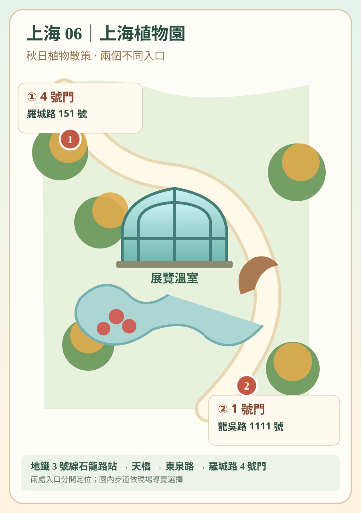

上海植物園・秋日散策

搭地鐵入園
搭乘地鐵 3 號線至石龍路站，經天橋、東泉路前往羅城路的4 號門。若選擇龍吳路 1111 號，則是另一處1 號門。
點擊後開啟高德地圖搜尋；請依現場開放入口及步行路徑導航。
園內慢遊
入園後依現場指標選擇溫室、盆景與季節花木展區，保留休息時間。園區開放及溫室票務以現場公告為準。

搭乘地鐵 3 號線至石龍路站，經天橋、東泉路前往羅城路的4 號門。若選擇龍吳路 1111 號，則是另一處1 號門。
點擊後開啟高德地圖搜尋；請依現場開放入口及步行路徑導航。
入園後依現場指標選擇溫室、盆景與季節花木展區，保留休息時間。園區開放及溫室票務以現場公告為準。